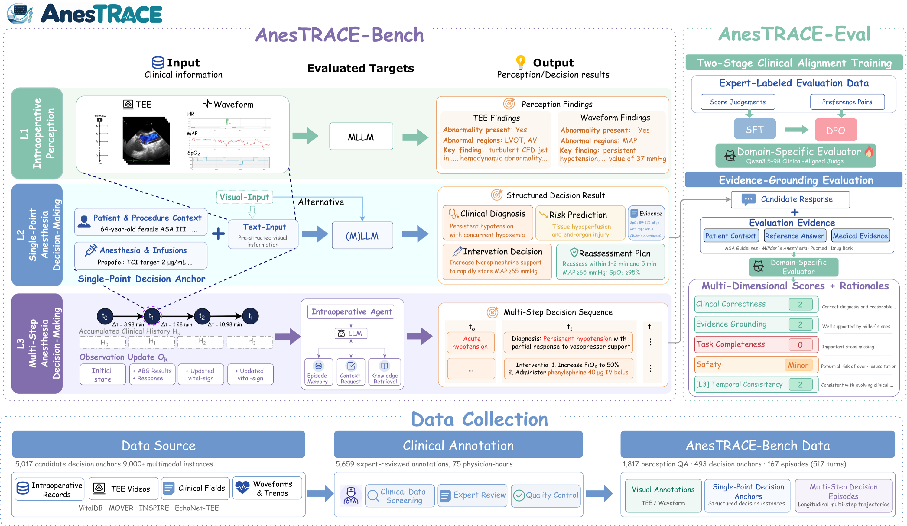

01 / Perceive
Intraoperative Perception
Interpret TEE frames or videos and physiological waveforms or trends. Tasks include recognition, visual grounding, functional assessment, and anomaly perception.
817 TEE QA · 1,000 waveform/trend QABenchmarking Intraoperative Anesthesia from Multimodal Perception to Multi-step Decision-Making
An evaluation suite for how AI models perceive intraoperative evidence, recommend management at a decision point, and update decisions across recorded clinical trajectories.
The framework
01 / Perceive
Interpret TEE frames or videos and physiological waveforms or trends. Tasks include recognition, visual grounding, functional assessment, and anomaly perception.
817 TEE QA · 1,000 waveform/trend QA02 / Decide
Use a standardized representation of the clinical state at one decision point to assess risk, diagnose, select an intervention, and plan reassessment.
493 anchors · 467 surgical cases03 / Update
Follow recorded episodes as states and documented intervention outcomes are revealed. Agents may seek information through bounded tools and episode memory.
167 episodes · 517 turns · 124 cases
Published results
Explore the three-level evaluation setting. Scores are not directly comparable across levels. These published results include historical API-based models; new official submissions require locally executable weights.
What the evaluation reveals
The highest reported TEE visual-grounding score remains limited, even when models perform better on basic recognition.
The highest-scoring multi-step model still has major or critical errors among safety-assessed intervention responses.
The best turn-level decision quality comes with substantial p95 response latency under the paper's inference configuration.
Open-ended response evaluation
Clinical management can admit more than one acceptable plan. AnesTRACE-Eval uses anesthesiologist-defined atomic criteria and a trained evaluator to judge responses against the information available at the decision time.
Read the evaluation protocolModel evaluation
Our inference code, agent framework, and evaluation tools are publicly available. To evaluate your model on AnesTRACE-Bench, contact us at ziweihuang@zju.edu.cn. The team evaluates fixed-version model weights locally using the private benchmark; benchmark data are not currently distributed.
Reference
@misc{huang2026anestrace,
title={AnesTRACE: Benchmarking Intraoperative Anesthesia from Multimodal Perception to Multi-step Decision-Making},
author={Ziwei Huang and Qi Gao and Zhe Ji and Yuanyuan Yao and Fengjiang Zhang and Min Yan and Zhongle Xie and Gang Chen},
year={2026},
eprint={2609.32740},
archivePrefix={arXiv},
primaryClass={cs.CV},
url={https://arxiv.org/abs/2609.32740}
}